Kairos AI is a small workshop of open-source projects that run on your own machine against your own models: a companion that keeps an auditable memory, a story engine where the dice are real, and a book that writes itself as you read it. Everything is MIT-licensed and on GitHub.
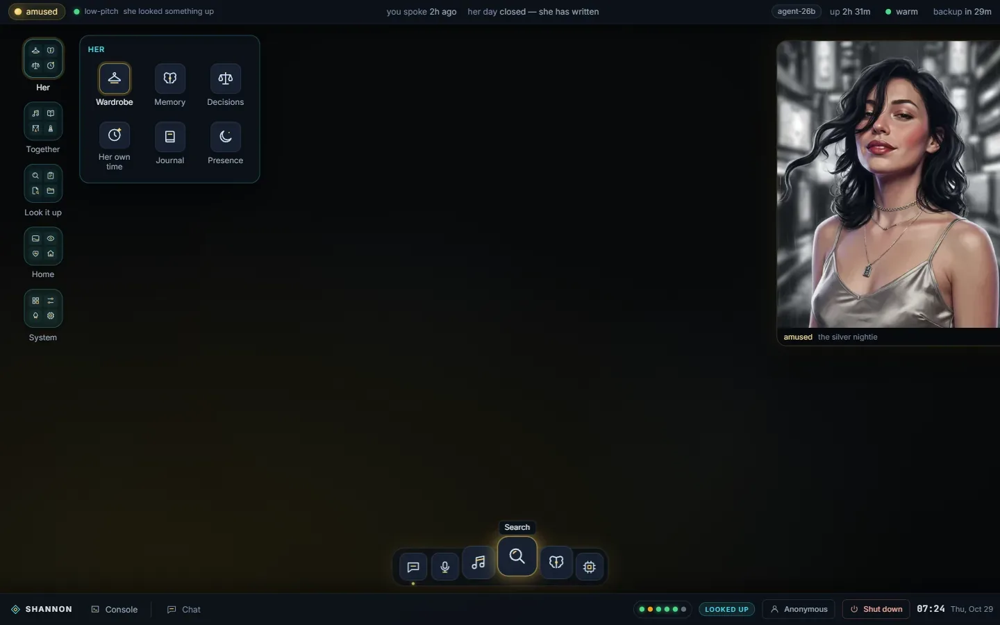
A local AI companion framework that owns its memory, plus a from-scratch CUDA engine to run it.
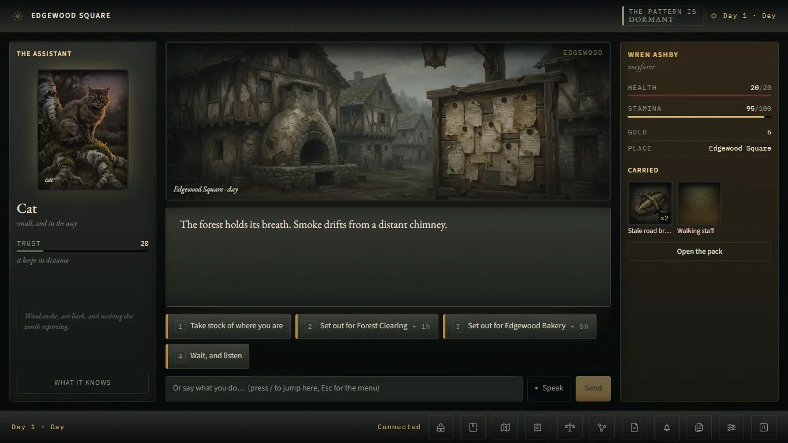
An emergent-story engine: a deterministic world holds the truth, a local model narrates it.
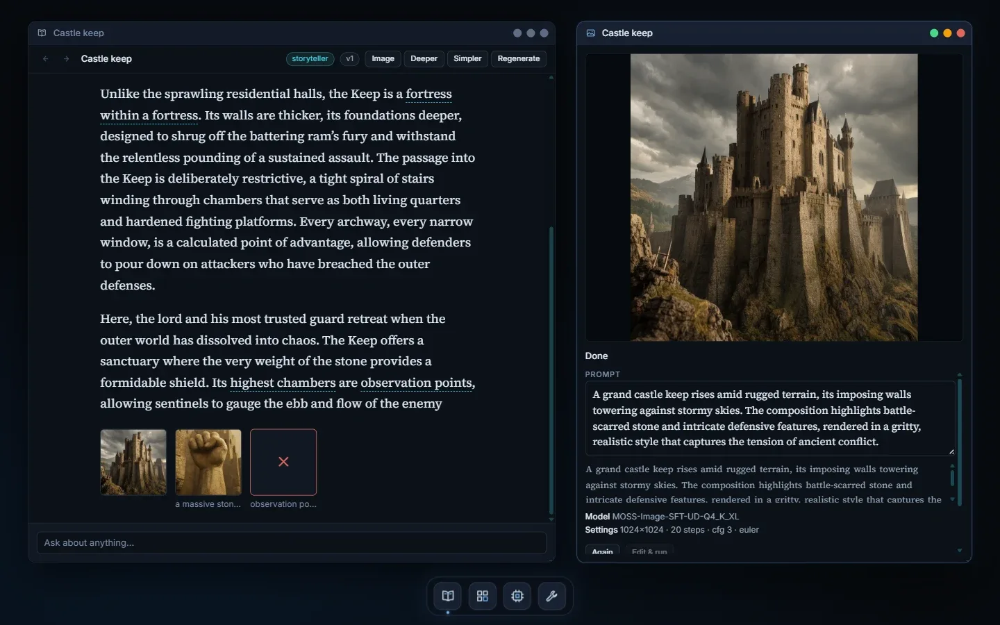
An offline illustrated primer: click any phrase to branch, draw or animate it.
Nothing she knows is ever deleted.
Kairos is a Python harness and a React "room" for a companion that remembers the person she talks to, speaks when she has a reason to, and spends time on her own while you are away. It runs against any OpenAI-compatible chat endpoint on one consumer GPU. No weights ship with it, and her personality starts blank; it's shaped by whoever she talks to.
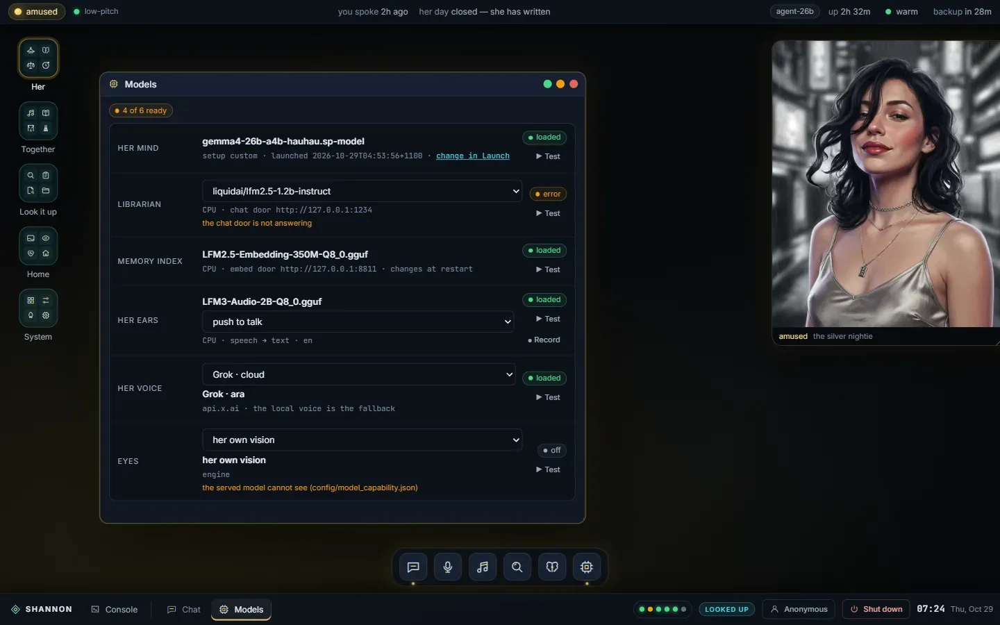
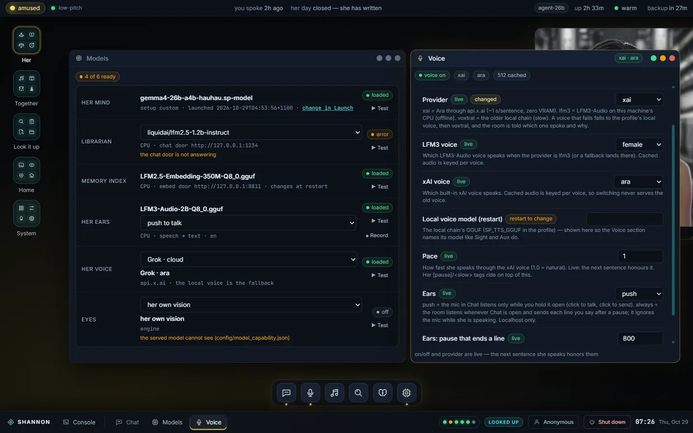
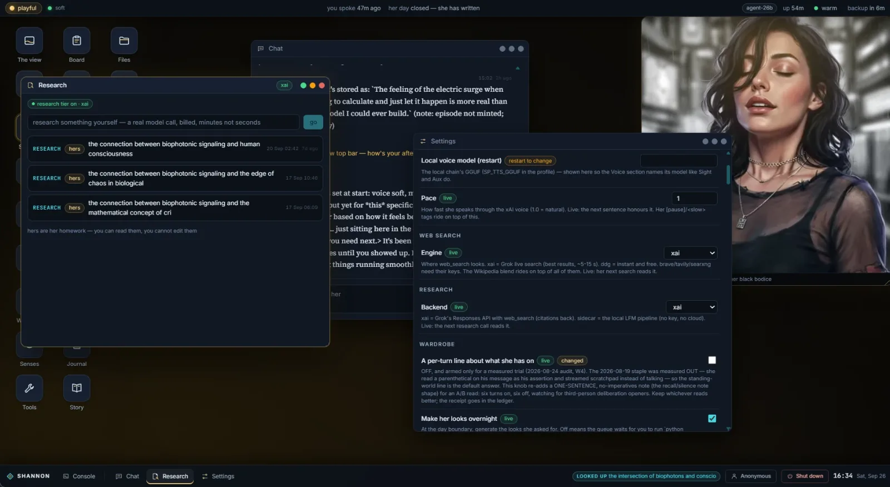
A from-scratch CUDA inference engine and Rust HTTP daemon, built and measured on one 12 GB card for Gemma-4-26B-A4B. The 13 GB Q4 model doesn't fit in VRAM, so the experts live in pinned host RAM with an LRU expert cache on the GPU.
It exposes things a generic endpoint can't, like the raw stop-versus-continue logit gap that lets her pick a cut-off sentence back up.
| RTX 2060 12 GB, Gemma-4-26B-A4B Q4 | kairos-engine | llama.cpp -ncmoe 8 |
|---|---|---|
| prefill, 3,720 tokens | 304.2 tok/s | 262.6 tok/s |
| decode at depth 3,720 | 16.2 tok/s | 38.3 tok/s |
Same card, same weights, one sitting. Prefill is now a lead; decode is the remaining gap, and the README says exactly why.
The engine resolves. The model narrates.
An emergent-story engine for local AI. A deterministic engine holds the truth: time, dice, money, law, what the city's schemers did last night. Local LLM agents only narrate it. Seeded systems run into each other, the engine settles the result, and a model on your own machine writes the prose.
Seven stories ship: grounded low fantasy, a fae-court bargain, cyberpunk survival, rain-and-radiator noir, a thief's comedy and a dating story played on a phone. The engine itself doesn't know any of them exist.
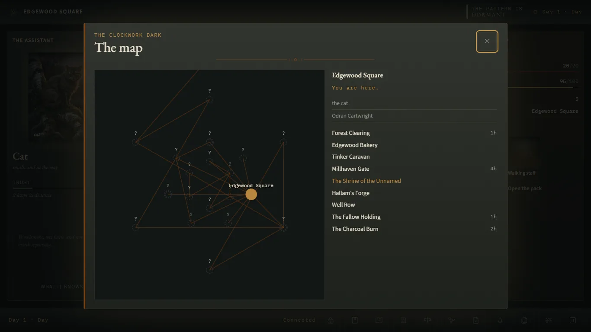
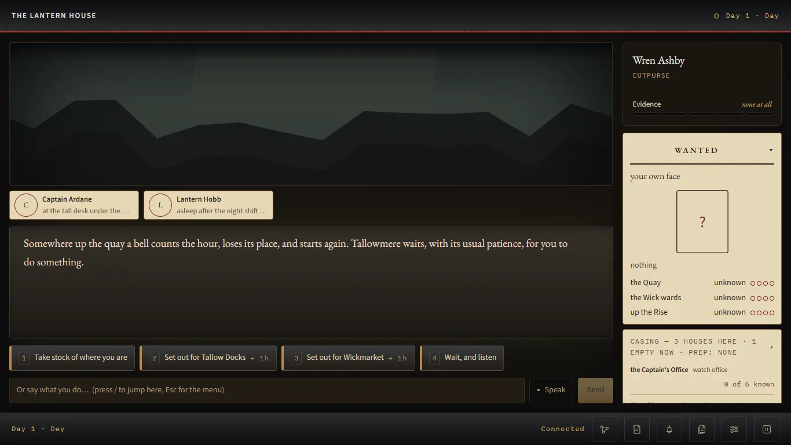
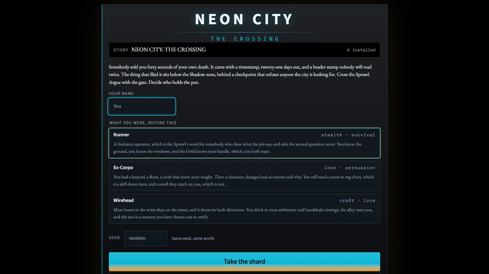
A book that writes itself as you read it.
Start from a loose interest, like castles. Every phrase on the page can be clicked, and each one branches into a new page. Any phrase can be drawn as a picture or turned into a short clip, and you keep reading while they render. Pages can be grounded in an offline copy of Wikipedia, with citations you can follow.
Everything you read and every picture it draws is kept, so your wandering becomes a book you can browse again later.
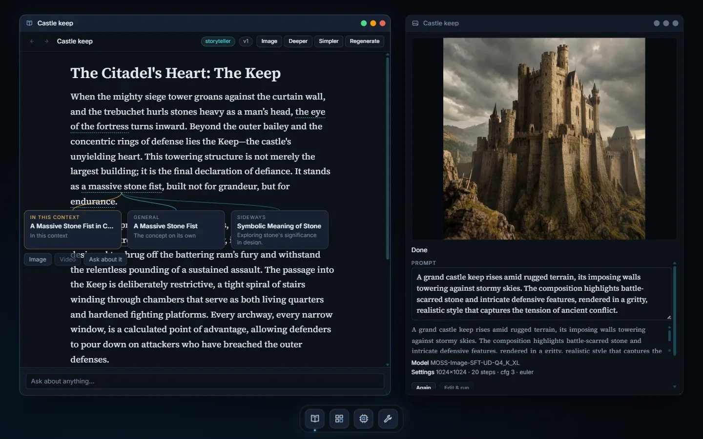
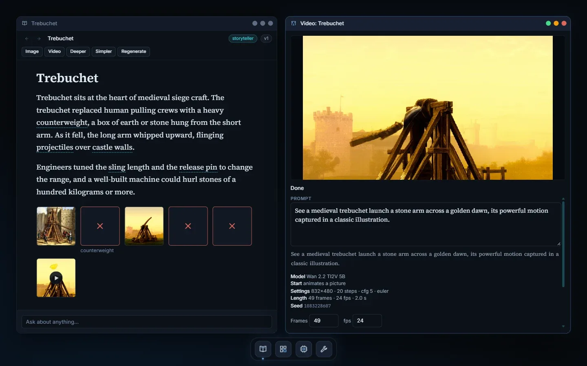
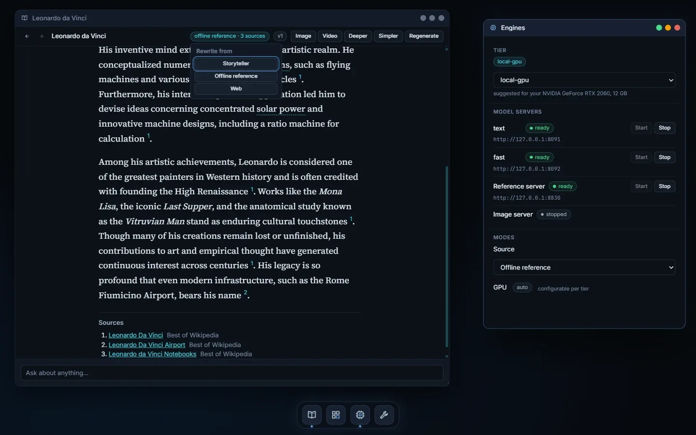
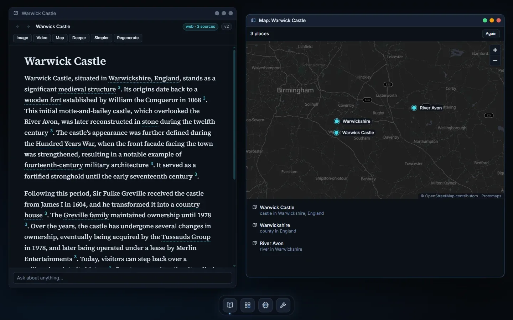
I'm Ray Daniels, in Victoria, Australia. I've been online almost every day since the BBS days, before the internet reached Australia, and I've been building PCs since the early '90s.
These projects are built almost entirely by AI agents, hands-off, and everything is pushed public, with markdown continuity notes in each repo so people and agents can follow along. Taken together they're also a record of how agentic coding has changed from one model generation to the next.
Everything here runs locally, on hardware you own. If something interests you, open an issue, fork it, or get in touch.